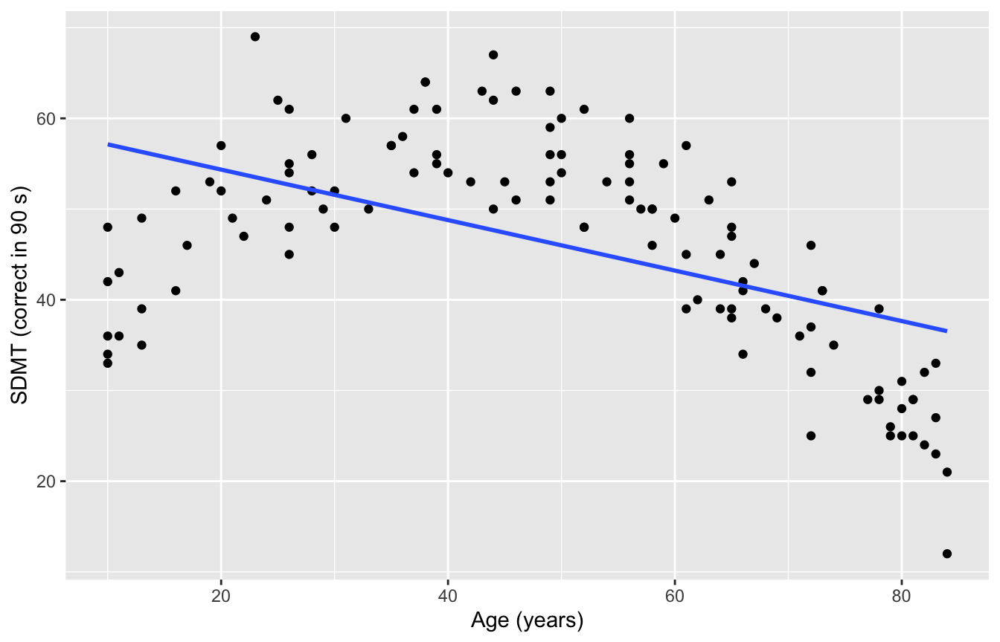
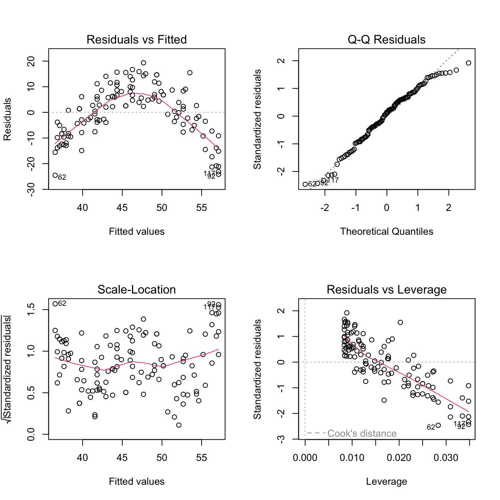
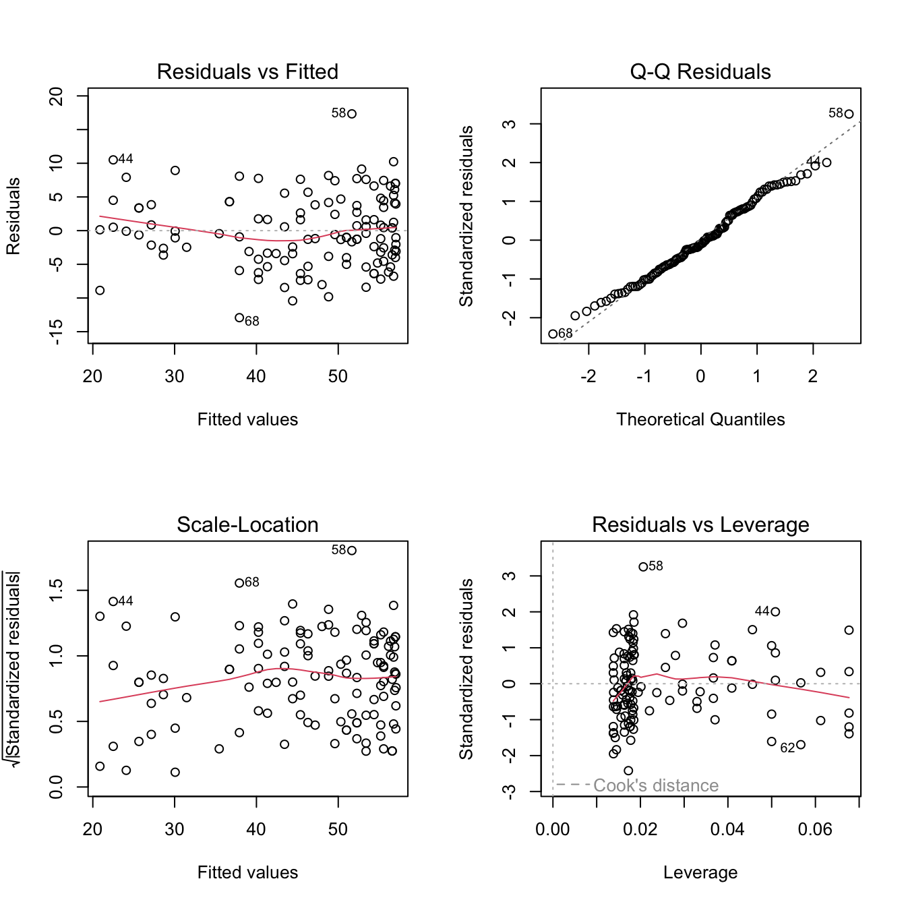
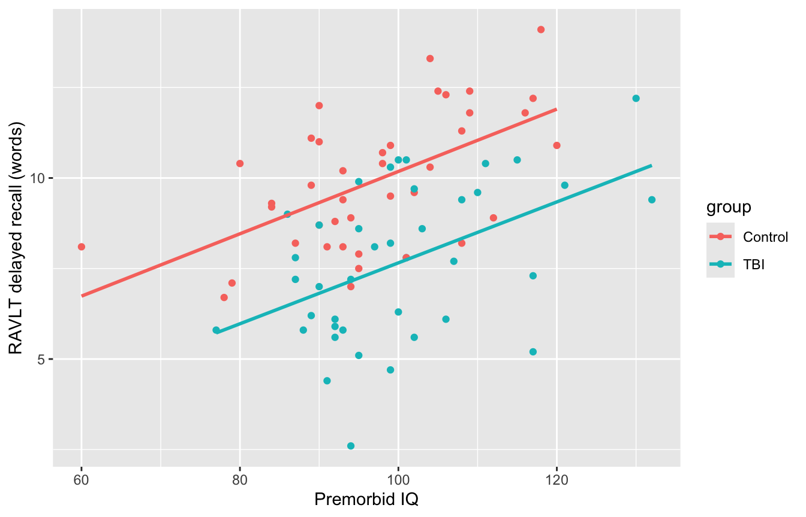
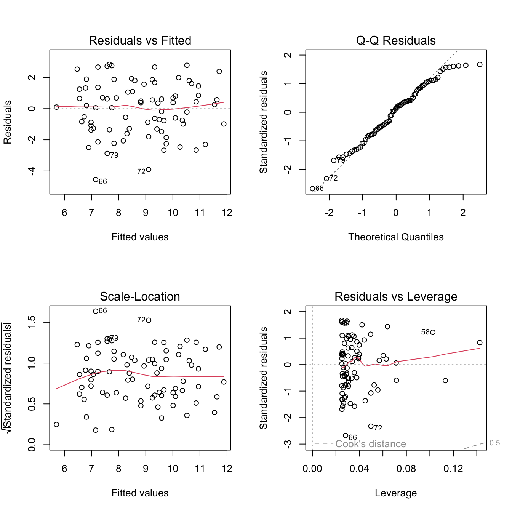
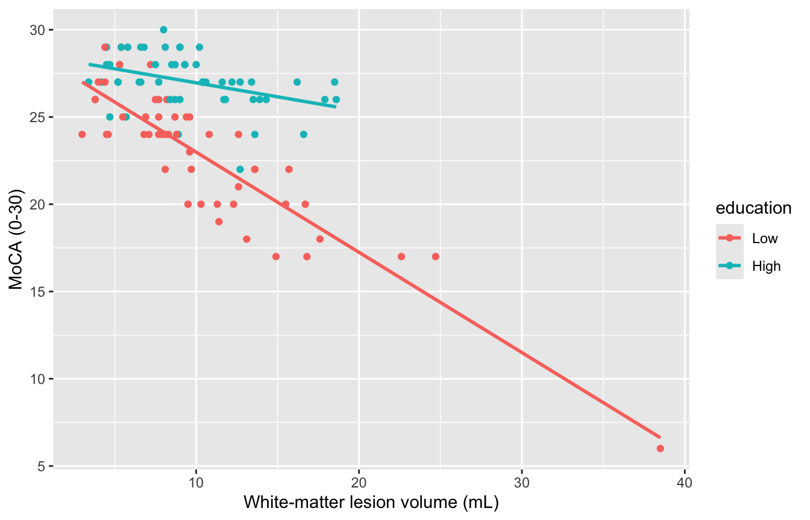
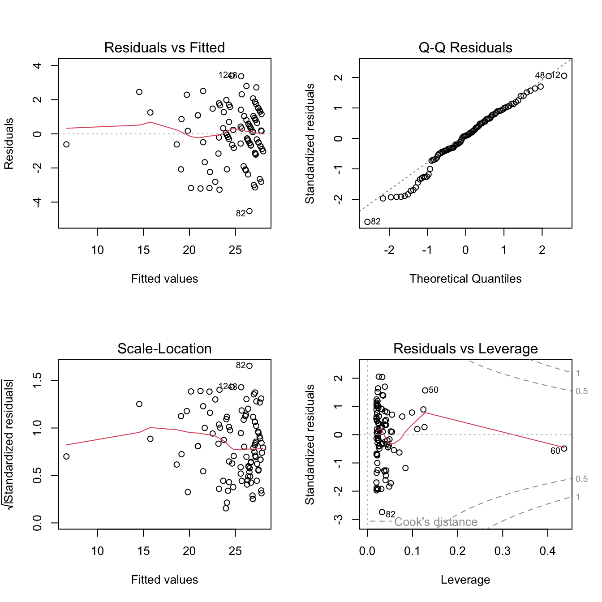
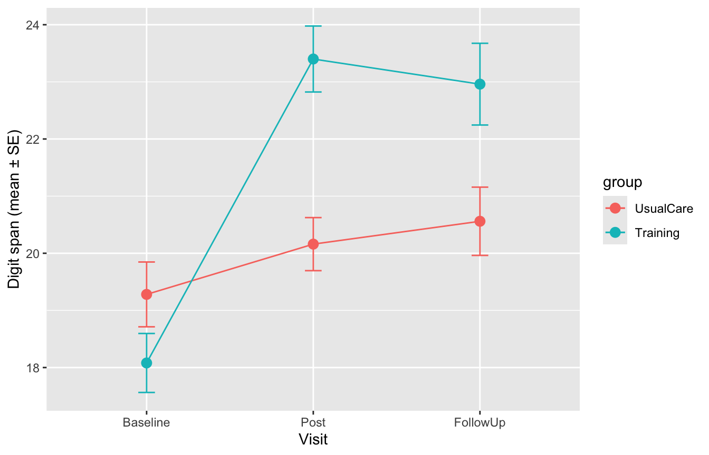

install.packages(c("car", "ggplot2", "rstatix", "lme4", "lmerTest"))7 · Quadratic regression, covariates and moderators
Statistics for brain and cognitive sciences (CN2)
A zip with the R script, the data and an .Rproj. Unzip it and open the .Rproj first, so that data/... paths work.
Overview
Context:
Four everyday questions in clinical neuropsychology, one per part. All the data are simulated.
You will see:
- A quadratic regression for a curved relation
- An ANCOVA, which adjusts a group difference for a covariate
- A moderation, where the slope depends on the group
- A mixed-design ANOVA, with one between and one within factor
If you do not have these packages yet, install them once:
library(ggplot2)Part 1: Processing speed across the lifespan
Norms for the Symbol Digit Modalities Test (SDMT) are split by age, because processing speed is not a straight line: it rises through adolescence, peaks in early adulthood and then declines.
sdmt <- read.csv("data/sdmt-age.csv")
head(sdmt)ggplot(sdmt, aes(x = age, y = sdmt)) +
geom_point() +
geom_smooth(method = "lm", se = FALSE) +
labs(x = "Age (years)", y = "SDMT (correct in 90 s)")`geom_smooth()` using formula = 'y ~ x'
Step 1: A straight line, then a curve
I(age^2) adds age squared as a second predictor. A negative coefficient for it means an inverted U.
lm_lin <- lm(sdmt ~ age, data = sdmt)
lm_quad <- lm(sdmt ~ age + I(age^2), data = sdmt)
summary(lm_lin)
Call:
lm(formula = sdmt ~ age, data = sdmt)
Residuals:
Min 1Q Median 3Q Max
-24.539 -7.360 1.360 6.853 19.330
Coefficients:
Estimate Std. Error t value Pr(>|t|)
(Intercept) 59.91451 2.25665 26.55 < 2e-16 ***
age -0.27828 0.04153 -6.70 7.49e-10 ***
---
Signif. codes: 0 '***' 0.001 '**' 0.01 '*' 0.05 '.' 0.1 ' ' 1
Residual standard error: 10.11 on 118 degrees of freedom
Multiple R-squared: 0.2756, Adjusted R-squared: 0.2695
F-statistic: 44.89 on 1 and 118 DF, p-value: 7.494e-10summary(lm_quad)
Call:
lm(formula = sdmt ~ age + I(age^2), data = sdmt)
Residuals:
Min 1Q Median 3Q Max
-12.9187 -3.6751 -0.5177 3.9915 17.3353
Coefficients:
Estimate Std. Error t value Pr(>|t|)
(Intercept) 27.162173 2.244535 12.10 <2e-16 ***
age 1.495253 0.104988 14.24 <2e-16 ***
I(age^2) -0.018692 0.001082 -17.28 <2e-16 ***
---
Signif. codes: 0 '***' 0.001 '**' 0.01 '*' 0.05 '.' 0.1 ' ' 1
Residual standard error: 5.387 on 117 degrees of freedom
Multiple R-squared: 0.7961, Adjusted R-squared: 0.7926
F-statistic: 228.4 on 2 and 117 DF, p-value: < 2.2e-16anova(lm_lin, lm_quad) # does the curve explain more than the line?par(mfrow = c(2, 2))
plot(lm_lin) # the U in "Residuals vs Fitted" shows the line is wrong
plot(lm_quad)
dev.off()Step 2: Centering
With raw age, the intercept is the predicted score at age 0, which nobody is. Centering makes it the score at the mean age, and the linear coefficient becomes the slope there.
sdmt$age_c <- sdmt$age - mean(sdmt$age)
lm_quad_c <- lm(sdmt ~ age_c + I(age_c^2), data = sdmt)
summary(lm_quad_c)
Call:
lm(formula = sdmt ~ age_c + I(age_c^2), data = sdmt)
Residuals:
Min 1Q Median 3Q Max
-12.9187 -3.6751 -0.5177 3.9915 17.3353
Coefficients:
Estimate Std. Error t value Pr(>|t|)
(Intercept) 55.346248 0.725989 76.24 <2e-16 ***
age_c -0.358416 0.022610 -15.85 <2e-16 ***
I(age_c^2) -0.018692 0.001082 -17.28 <2e-16 ***
---
Signif. codes: 0 '***' 0.001 '**' 0.01 '*' 0.05 '.' 0.1 ' ' 1
Residual standard error: 5.387 on 117 degrees of freedom
Multiple R-squared: 0.7961, Adjusted R-squared: 0.7926
F-statistic: 228.4 on 2 and 117 DF, p-value: < 2.2e-16Part 2: Memory after traumatic brain injury
Patients with traumatic brain injury (TBI) recall fewer words than controls. But people differ in ability before the injury, so we adjust for premorbid IQ, estimated from a word-reading test.
tbi <- read.csv("data/tbi-memory.csv")
tbi$group <- factor(tbi$group, levels = c("Control", "TBI"))
head(tbi)ggplot(tbi, aes(x = premorbid_iq, y = recall, colour = group)) +
geom_point() +
geom_smooth(method = "lm", se = FALSE) +
labs(x = "Premorbid IQ", y = "RAVLT delayed recall (words)")`geom_smooth()` using formula = 'y ~ x'
Step 1: ANOVA, then ANCOVA
Put the covariate first. In the ANCOVA, the groupTBI coefficient is the difference between groups for people with the same premorbid IQ.
aov_anova <- aov(recall ~ group, data = tbi)
aov_ancova <- aov(recall ~ premorbid_iq + group, data = tbi)
summary.lm(aov_anova)
Call:
aov(formula = recall ~ group, data = tbi)
Residuals:
Min 1Q Median 3Q Max
-5.0650 -1.7219 -0.0362 1.7350 4.5350
Coefficients:
Estimate Std. Error t value Pr(>|t|)
(Intercept) 9.9075 0.3162 31.331 < 2e-16 ***
groupTBI -2.2425 0.4472 -5.015 3.26e-06 ***
---
Signif. codes: 0 '***' 0.001 '**' 0.01 '*' 0.05 '.' 0.1 ' ' 1
Residual standard error: 2 on 78 degrees of freedom
Multiple R-squared: 0.2438, Adjusted R-squared: 0.2341
F-statistic: 25.15 on 1 and 78 DF, p-value: 3.255e-06summary.lm(aov_ancova)
Call:
aov(formula = recall ~ premorbid_iq + group, data = tbi)
Residuals:
Min 1Q Median 3Q Max
-4.5457 -1.2679 0.2274 1.3381 2.8435
Coefficients:
Estimate Std. Error t value Pr(>|t|)
(Intercept) 1.66407 1.57623 1.056 0.294
premorbid_iq 0.08514 0.01603 5.310 1.03e-06 ***
groupTBI -2.52133 0.38865 -6.487 7.63e-09 ***
---
Signif. codes: 0 '***' 0.001 '**' 0.01 '*' 0.05 '.' 0.1 ' ' 1
Residual standard error: 1.722 on 77 degrees of freedom
Multiple R-squared: 0.4465, Adjusted R-squared: 0.4321
F-statistic: 31.05 on 2 and 77 DF, p-value: 1.292e-10car::Anova(aov_ancova, type = 2)anova(aov_anova, aov_ancova) # does the covariate improve the model?The covariate barely moves the group difference here, because the groups have similar IQs. What it does is shrink the residual error, so the group effect is estimated more precisely: compare the two standard errors for groupTBI.
Step 2: Assumptions
ANCOVA assumes the same slope in both groups. Test it by adding the interaction: if it is not significant, the additive model is fine.
par(mfrow = c(2, 2))
plot(aov_ancova)
dev.off()car::leveneTest(recall ~ group, data = tbi)anova(aov_ancova, aov(recall ~ premorbid_iq * group, data = tbi)) # equal slopes?Part 3: Cognitive reserve
White-matter lesions on MRI go with worse cognition. The cognitive reserve hypothesis says that people with more education cope better with the same damage. If so, the slope of MoCA on lesion volume should be flatter for them: education moderates the effect of lesions.
reserve <- read.csv("data/reserve-moca.csv")
reserve$education <- factor(reserve$education, levels = c("Low", "High"))
head(reserve)ggplot(reserve, aes(x = lesion_ml, y = moca, colour = education)) +
geom_point() +
geom_smooth(method = "lm", se = FALSE) +
labs(x = "White-matter lesion volume (mL)", y = "MoCA (0-30)")`geom_smooth()` using formula = 'y ~ x'
Step 1: From ANOVA to moderation
lesion_ml * education is short for lesion_ml + education + lesion_ml:education. The interaction coefficient is how much flatter (or steeper) the slope is in the high-education group.
m_anova <- lm(moca ~ education, data = reserve)
m_ancova <- lm(moca ~ lesion_ml + education, data = reserve)
m_mod <- lm(moca ~ lesion_ml * education, data = reserve)
summary(m_mod)
Call:
lm(formula = moca ~ lesion_ml * education, data = reserve)
Residuals:
Min 1Q Median 3Q Max
-4.5244 -0.7522 0.1485 1.1818 3.4076
Coefficients:
Estimate Std. Error t value Pr(>|t|)
(Intercept) 28.72705 0.46389 61.927 < 2e-16 ***
lesion_ml -0.57426 0.03848 -14.922 < 2e-16 ***
educationHigh -0.16302 0.78437 -0.208 0.836
lesion_ml:educationHigh 0.41366 0.07211 5.737 1.12e-07 ***
---
Signif. codes: 0 '***' 0.001 '**' 0.01 '*' 0.05 '.' 0.1 ' ' 1
Residual standard error: 1.679 on 96 degrees of freedom
Multiple R-squared: 0.8021, Adjusted R-squared: 0.7959
F-statistic: 129.7 on 3 and 96 DF, p-value: < 2.2e-16anova(m_anova, m_ancova, m_mod) # each step adds a termStep 2: Centering and type III tests
educationHigh is the group difference at 0 mL of lesions, outside the data. Centering moves it to the average lesion volume. With an interaction, use deviation coding and type III sums of squares.
m_mod_c <- lm(moca ~ scale(lesion_ml, scale = FALSE) * education,
contrasts = list(education = "contr.sum"),
data = reserve)
summary(m_mod_c)
Call:
lm(formula = moca ~ scale(lesion_ml, scale = FALSE) * education,
data = reserve, contrasts = list(education = "contr.sum"))
Residuals:
Min 1Q Median 3Q Max
-4.5244 -0.7522 0.1485 1.1818 3.4076
Coefficients:
Estimate Std. Error t value Pr(>|t|)
(Intercept) 24.97673 0.16840 148.318 < 2e-16
scale(lesion_ml, scale = FALSE) -0.36743 0.03605 -10.191 < 2e-16
education1 -1.98368 0.16840 -11.780 < 2e-16
scale(lesion_ml, scale = FALSE):education1 -0.20683 0.03605 -5.737 1.12e-07
(Intercept) ***
scale(lesion_ml, scale = FALSE) ***
education1 ***
scale(lesion_ml, scale = FALSE):education1 ***
---
Signif. codes: 0 '***' 0.001 '**' 0.01 '*' 0.05 '.' 0.1 ' ' 1
Residual standard error: 1.679 on 96 degrees of freedom
Multiple R-squared: 0.8021, Adjusted R-squared: 0.7959
F-statistic: 129.7 on 3 and 96 DF, p-value: < 2.2e-16car::Anova(m_mod_c, type = 3)par(mfrow = c(2, 2))
plot(m_mod)
dev.off()Part 4: Working-memory training after stroke
Stroke patients were randomised to computerised working-memory training or usual care, and did a digit span test at three visits. Group varies between patients and visit within them. The question is the interaction: do the two groups change differently over time?
stroke <- read.csv("data/stroke-training.csv")
stroke$patient <- factor(stroke$patient)
stroke$group <- factor(stroke$group, levels = c("UsualCare", "Training"))
stroke$visit <- factor(stroke$visit, levels = c("Baseline", "Post", "FollowUp"))
head(stroke)tapply(stroke$digit_span, list(stroke$group, stroke$visit), mean) Baseline Post FollowUp
UsualCare 19.28 20.16 20.56
Training 18.08 23.40 22.96ggplot(stroke, aes(x = visit, y = digit_span, colour = group, group = group)) +
stat_summary(fun = mean, geom = "point", size = 3) +
stat_summary(fun = mean, geom = "line") +
stat_summary(fun.data = mean_se, geom = "errorbar", width = 0.1) +
labs(x = "Visit", y = "Digit span (mean ± SE)")
Step 1: Mixed-design ANOVA
summary(aov(digit_span ~ group * visit + Error(patient/visit), data = stroke))
Error: patient
Df Sum Sq Mean Sq F value Pr(>F)
group 1 82.1 82.14 4.497 0.0391 *
Residuals 48 876.7 18.26
---
Signif. codes: 0 '***' 0.001 '**' 0.01 '*' 0.05 '.' 0.1 ' ' 1
Error: patient:visit
Df Sum Sq Mean Sq F value Pr(>F)
visit 2 318.3 159.14 46.77 6.59e-15 ***
group:visit 2 139.1 69.54 20.44 4.03e-08 ***
Residuals 96 326.6 3.40
---
Signif. codes: 0 '***' 0.001 '**' 0.01 '*' 0.05 '.' 0.1 ' ' 1# same analysis, with Mauchly's test of sphericity
rstatix::anova_test(data = stroke, dv = digit_span, wid = patient,
between = group, within = visit)ANOVA Table (type II tests)
$ANOVA
Effect DFn DFd F p p<.05 ges
1 group 1 48 4.497 3.90e-02 * 0.064
2 visit 2 96 46.771 6.59e-15 * 0.209
3 group:visit 2 96 20.438 4.03e-08 * 0.104
$`Mauchly's Test for Sphericity`
Effect W p p<.05
1 visit 0.976 0.563
2 group:visit 0.976 0.563
$`Sphericity Corrections`
Effect GGe DF[GG] p[GG] p[GG]<.05 HFe DF[HF] p[HF]
1 visit 0.976 1.95, 93.74 1.30e-14 * 1.017 2.03, 97.66 6.59e-15
2 group:visit 0.976 1.95, 93.74 5.57e-08 * 1.017 2.03, 97.66 4.03e-08
p[HF]<.05
1 *
2 *Step 2: Mixed-effects model
With dummy coding, the intercept is the usual-care group at baseline, and each interaction coefficient is the extra change in the training group at that visit.
library(lmerTest) # loads lme4 and adds p-valuesLoading required package: lme4Loading required package: Matrix
Attaching package: 'lmerTest'The following object is masked from 'package:lme4':
lmerThe following object is masked from 'package:stats':
steplmer_mod <- lmer(digit_span ~ group * visit + (1 | patient), data = stroke)
summary(lmer_mod)Linear mixed model fit by REML. t-tests use Satterthwaite's method [
lmerModLmerTest]
Formula: digit_span ~ group * visit + (1 | patient)
Data: stroke
REML criterion at convergence: 685
Scaled residuals:
Min 1Q Median 3Q Max
-2.28410 -0.50225 0.00681 0.55593 2.65885
Random effects:
Groups Name Variance Std.Dev.
patient (Intercept) 4.954 2.226
Residual 3.402 1.845
Number of obs: 150, groups: patient, 50
Fixed effects:
Estimate Std. Error df t value Pr(>|t|)
(Intercept) 19.2800 0.5782 84.5607 33.347 < 2e-16 ***
groupTraining -1.2000 0.8176 84.5607 -1.468 0.1459
visitPost 0.8800 0.5217 96.0000 1.687 0.0949 .
visitFollowUp 1.2800 0.5217 96.0000 2.453 0.0160 *
groupTraining:visitPost 4.4400 0.7378 96.0000 6.018 3.22e-08 ***
groupTraining:visitFollowUp 3.6000 0.7378 96.0000 4.879 4.23e-06 ***
---
Signif. codes: 0 '***' 0.001 '**' 0.01 '*' 0.05 '.' 0.1 ' ' 1
Correlation of Fixed Effects:
(Intr) grpTrn vstPst vstFlU grpT:P
groupTranng -0.707
visitPost -0.451 0.319
visitFllwUp -0.451 0.319 0.500
grpTrnng:vP 0.319 -0.451 -0.707 -0.354
grpTrnng:FU 0.319 -0.451 -0.354 -0.707 0.500# deviation coding for type III tests, as in the ANOVA above
lmer_mod_sum <- lmer(digit_span ~ group * visit + (1 | patient),
contrasts = list(group = "contr.sum", visit = "contr.sum"),
data = stroke)
anova(lmer_mod_sum)
TipHow the data were simulated
# ---------------------------------------------------------------------------
# Four clinical datasets for session 07 (quadratic regression, ANCOVA,
# moderation, mixed-design ANOVA)
#
# sdmt-age.csv normative sample: processing speed across the lifespan
# tbi-memory.csv TBI patients vs controls, delayed recall + premorbid IQ
# reserve-moca.csv cognitive reserve: lesion load x education on MoCA
# stroke-training.csv working-memory training vs usual care, three visits;
# LONG format, one row per patient per visit
#
# The true values mirror the structure of the simulations in Regression3.R.
#
# Run standalone from the project root: Rscript data-raw/make-reg3.R
# Writes: data-raw/_build/sdmt-age.csv
# data-raw/_build/tbi-memory.csv
# data-raw/_build/reserve-moca.csv
# data-raw/_build/stroke-training.csv
# ---------------------------------------------------------------------------
set.seed(42)
# ---- quadratic: SDMT across the lifespan ----------------------------------
# rises through adolescence, peaks in early adulthood, then declines
n_sdmt <- 120
age <- round(runif(n_sdmt, 10, 85))
sdmt_age <- data.frame(
id = seq_len(n_sdmt),
age = age,
sdmt = round(30 + 1.4 * age - 0.018 * age^2 + rnorm(n_sdmt, 0, 6))
)
# ---- ANCOVA: TBI vs controls, adjusted for premorbid IQ -------------------
n_tbi <- 80 # even: half per group
tbi <- sample(rep(0:1, each = n_tbi / 2))
iq <- round(rnorm(n_tbi, 100, 12))
tbi_memory <- data.frame(
id = seq_len(n_tbi),
group = ifelse(tbi == 1, "TBI", "Control"),
premorbid_iq = iq,
recall = round(-1 + 0.11 * iq - 2.5 * tbi + rnorm(n_tbi, 0, 1.8), 1)
)
# ---- moderation: cognitive reserve ----------------------------------------
# more lesion load, lower MoCA -- but the drop is steeper with low education
n_res <- 100
high_edu <- sample(rep(0:1, each = n_res / 2))
lesion <- round(pmax(rlnorm(n_res, log(9), 0.45), 0.5), 1)
moca <- 28.5 + 0.5 * high_edu - 0.55 * lesion + 0.35 * lesion * high_edu +
rnorm(n_res, 0, 1.6)
reserve_moca <- data.frame(
id = seq_len(n_res),
education = ifelse(high_edu == 1, "High", "Low"),
lesion_ml = lesion,
moca = pmin(round(moca), 30) # MoCA tops out at 30
)
# ---- mixed design: training vs usual care over three visits ---------------
n_per_arm <- 25
cell_means <- rbind(UsualCare = c(Baseline = 20, Post = 21, FollowUp = 21),
Training = c(Baseline = 20, Post = 25, FollowUp = 24))
sd_patient <- 3 # some patients have a longer span at every visit
sd_res <- 2
arm <- rep(rownames(cell_means), each = n_per_arm)
patient_effect <- rnorm(length(arm), 0, sd_patient)
stroke <- expand.grid(visit = colnames(cell_means),
patient = seq_along(arm),
stringsAsFactors = FALSE)
stroke$group <- arm[stroke$patient]
stroke$digit_span <- round(cell_means[cbind(stroke$group, stroke$visit)] +
patient_effect[stroke$patient] +
rnorm(nrow(stroke), 0, sd_res))
stroke <- stroke[c("patient", "group", "visit", "digit_span")]
# ---- write ----------------------------------------------------------------
out <- file.path("data-raw", "_build")
dir.create(out, showWarnings = FALSE, recursive = TRUE)
write.csv(sdmt_age, file.path(out, "sdmt-age.csv"), row.names = FALSE)
write.csv(tbi_memory, file.path(out, "tbi-memory.csv"), row.names = FALSE)
write.csv(reserve_moca, file.path(out, "reserve-moca.csv"), row.names = FALSE)
write.csv(stroke, file.path(out, "stroke-training.csv"), row.names = FALSE)
cat("wrote 4 datasets to", out, "\n")